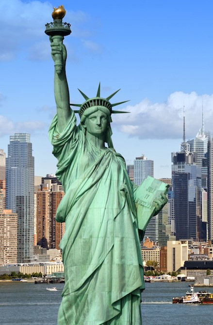
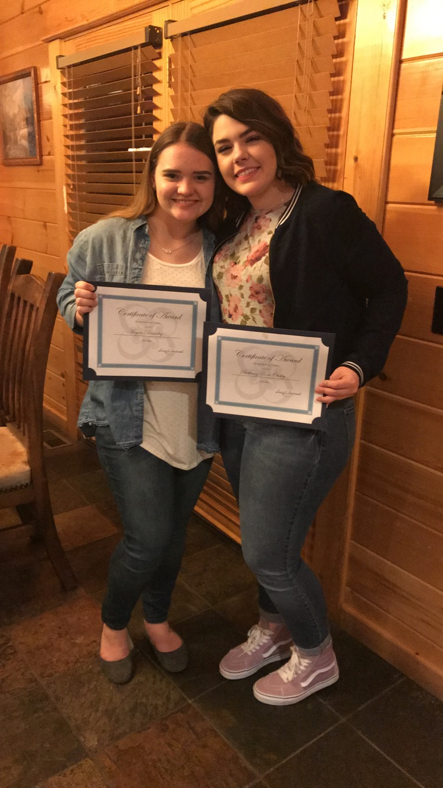
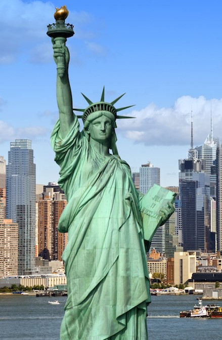
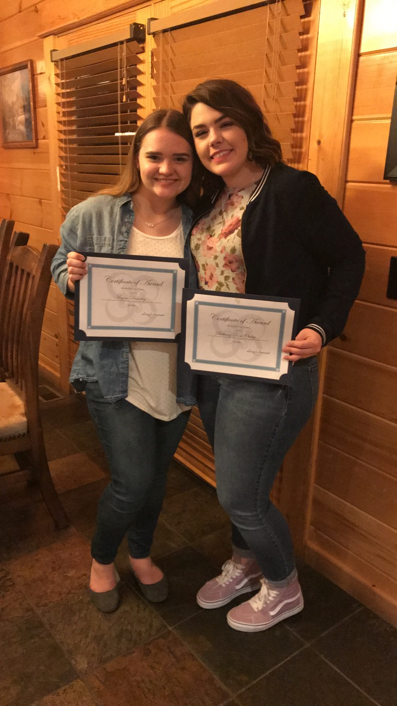

I recently won first place in the Tennessee State BETA
Painting Competition! I created an acrylic painting of the
Afghan Refugee featured on National Geographic and entered it
at BETA convention. This reward made the trip even more exciting
than it already was. BETA convention was incredible. I enjoyed
spending time with friends, exploring Nashville, and attending
BETA events. I'd like to think my friends for their constant
support as well as my BETA sponsors, Mrs. Kay Hart and
Mrs. Penny Roberts.
During CYC in Gatlinburg, Tennessee, Bethany Ousley and I
both won a $1000 scholarship. There were only three winners out
of nearly fifty contestants, and we were lucky enough to be two
of those winners! CYC was an incredible experience filled with
worshipping God as well as making wonderful memories with friends.